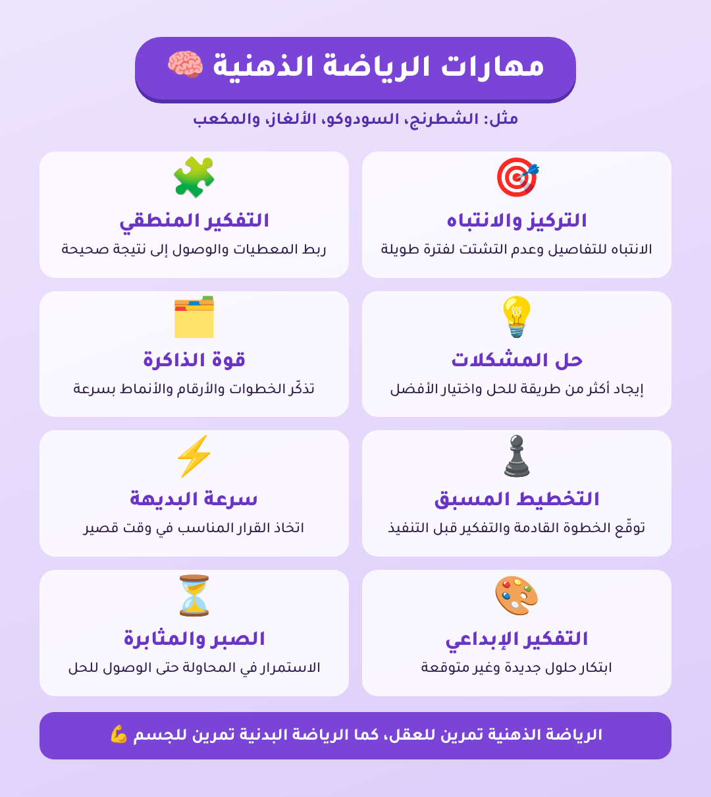
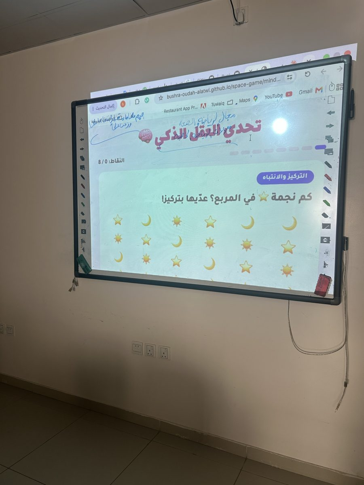
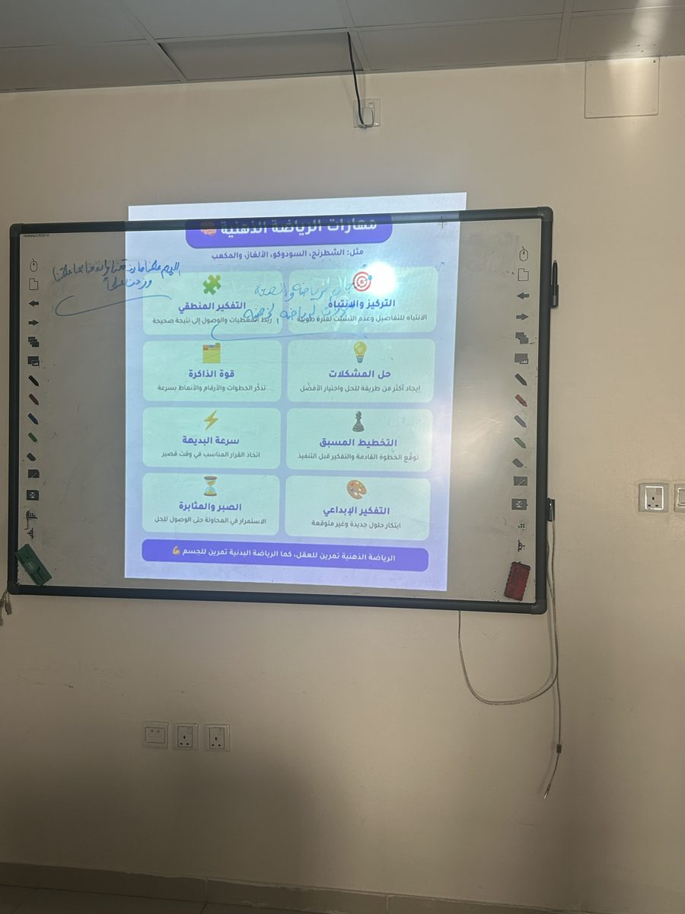
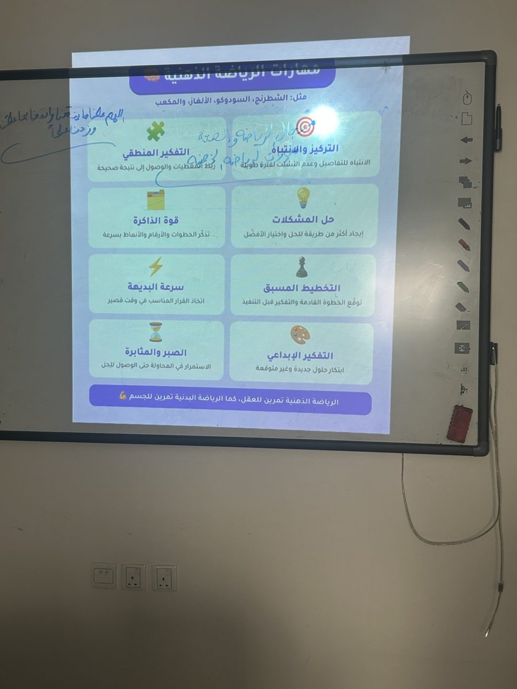

نشاط صفي نفّذته المعلمة بشرى العطوي مع طالبات المرحلة المتوسطة، تعرّفت فيه الطالبات على مفهوم الرياضة الذهنية بوصفها تمرينًا للعقل كما أن الرياضة البدنية تمرين للجسم، ثم طبّقن مهاراتها عمليًا من خلال لعبة إلكترونية تفاعلية عُرضت على السبورة الذكية.
لوحة تعريفية بثماني مهارات: التركيز والانتباه، التفكير المنطقي، حل المشكلات، قوة الذاكرة، التخطيط المسبق، سرعة البديهة، التفكير الإبداعي، الصبر والمثابرة.

لعبة إلكترونية من ثمانية تحديات، كل تحدٍّ يدرّب مهارة واحدة:


